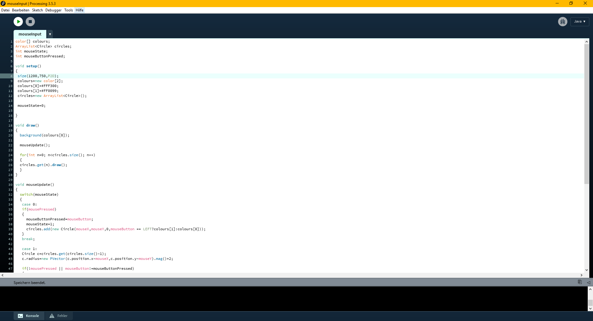
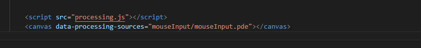
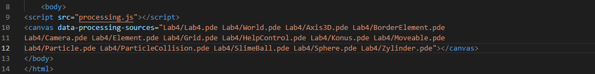

Processing
-
Processing.js funktioniert mit in Java geschriebenem Processing Code.
-
Ermöglicht Anwendungen mit Fokus auf Userinteraktionen durch Maus und Keyboard.
-
Großteil der Features von herkömlichem Processing.
- Einschränkungen gegenüber normalem Processing besonders in Rendermodi (WebGL nicht vollständig implementiert!)
- Import von Java-libraries nicht möglich
- Probleme mit Mauskoordinaten beim Skalieren des Canvases (Skaliertes Beispiel)
- Code aus herkömlichen Processing funktioniert nicht mit Sicherheit auch in Processing.js, Processing.js's eigene Reference Page beachten!
Nutzung
Erstellen von Code in Processing. Hierfür bietet sich zum schnellen Testen das standart Processing IDE an.

Einbetten von Processing ins HTML

Es ist auch möglich ein Processing Projekt aus mehreren .pde Dateien zu importieren:

Achtung!
Schon beim Laden aus dem lokalen Dateisystem von Processing.js greift die Same-origin Policy! Daher muss Processing.js immer über einen Server ausgeführt/geladen werden.
Links
Processing.js Beispiele